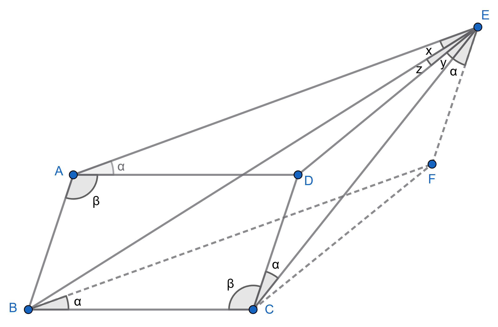

In the figure, $ABCD$ is a parallelogram and $\angle EAD = \angle ECD = \alpha$. Show that $\angle AEB=x$ and $\angle DEC=y$ are equal.
Proving the claim is trickier than it looks! We suggest one of the following ideas:
Pure geometry: Add an auxiliary point to the figure to simultaneously create two additional parallelograms.
A pinch of trigonometry: Use the law of sines once in $\triangle ADE$ and $\triangle DCE$ and another time in $\triangle ABE$ and $\triangle BCE$.

Geometric reasoning. Take the point $F$ so $ABFE$ and $DCFE$ are paralleograms. Then $\angle FBC = \angle FEC = \alpha$, so the four points $B,C,F,E$ lie on a circle. Thus,
$$
y+z = \angle BFC = \angle AED =x+z,
$$
from which it follows that $x=y$.
Trigonometry. Applying the law of sines in $\triangle ADE$ and $\triangle DCE$ gives
$$
\frac{DC}{\sin y}=\frac{DE}{\sin \alpha} = \frac{AD}{\sin(x+z)}.
$$
Similarly, applying the same law in $\triangle ABE$ and $\triangle BCE$ gives
$$
\frac{AB}{\sin x}=\frac{BE}{\sin (\alpha+\beta)} = \frac{BC}{\sin(y+z)}.
$$
Comparing the two sets of equations and using $AB=DC, AD=BC$, we obtain
\begin{align*}
& \sin (x+z) \sin x = \sin (y+z) \sin y \\
\Longrightarrow \ & \cos z - \cos(2x+z) = \cos z - \cos (2y+z) \\
\Longrightarrow \ & 2x+z=2y+z \Longrightarrow x=y.
\end{align*}